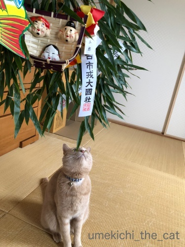
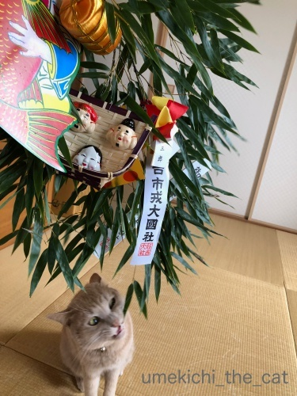
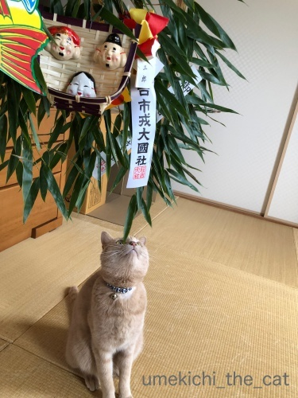
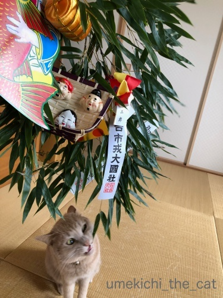

今年もえべっさんだよ！ [梅吉]
10日は戎社の例祭「えべっさん」でした。
去年に続いて今年もお参りに行って来ました。
今年はあいにくの雨と風。寒くて手袋を外してスマホ撮影する手がかじかみます。
傘を片手に結構アクロバティックな感じで撮影していたら
どーしょうもない写真しか撮れていなかった・・・
（なのでお外の写真はありません (⌒_⌒; ）
福笹はちゃんといただいて来ましたよー。
福笹には「縁起物」と呼ばれるチャームのようなものをつけてもらいます。
付け手は女性なんですが
男性はなぜか若い福娘の方に流れて行くのでお嬢さんの前には列ができてますw
私はちょっと手持ち無沙汰な「福おばちゃん」に縁起物を結んでもらいますよww
おばちゃんも私にシンパシーを感じたのか縁起物を一個おまけしてくれました！わーいwww

今年の福笹です。
これから更に重要な縁起物が付きます。

キターッ！
でっかい猫の縁起物！！

左手を上げてお客さんを招いてくれています。
ブログ大繁盛ってこと！？

おおお！かじってます。
「食いつきが良い年」（なんのだ・・・）ってことですか？招き猫さん？

「かみしめて味わう年」でもあるんですね。招き猫さん？
皆さんにもたくさんの福がやって来ますようにー＾＾
 ↑ガブッと一押し↑
↑ガブッと一押し↑
去年に続いて今年もお参りに行って来ました。
今年はあいにくの雨と風。寒くて手袋を外してスマホ撮影する手がかじかみます。
傘を片手に結構アクロバティックな感じで撮影していたら
どーしょうもない写真しか撮れていなかった・・・
（なのでお外の写真はありません (⌒_⌒; ）
福笹はちゃんといただいて来ましたよー。
福笹には「縁起物」と呼ばれるチャームのようなものをつけてもらいます。
付け手は女性なんですが
男性はなぜか若い福娘の方に流れて行くのでお嬢さんの前には列ができてますw
私はちょっと手持ち無沙汰な「福おばちゃん」に縁起物を結んでもらいますよww
おばちゃんも私にシンパシーを感じたのか縁起物を一個おまけしてくれました！わーいwww

今年の福笹です。
これから更に重要な縁起物が付きます。

キターッ！
でっかい猫の縁起物！！

左手を上げてお客さんを招いてくれています。
ブログ大繁盛ってこと！？

おおお！かじってます。
「食いつきが良い年」（なんのだ・・・）ってことですか？招き猫さん？

「かみしめて味わう年」でもあるんですね。招き猫さん？
皆さんにもたくさんの福がやって来ますようにー＾＾

カフェオレ色の梅吉

梅吉 2023年8月10日 永眠


梅吉と出会った譲渡会

犬猫の理由なき殺処分ゼロ
妄想広告
UMEKICHI 光

爆発的に早い！
時々攻撃的！
Thanks to Mr.Boss365
爆発的に早い！
時々攻撃的！
Thanks to Mr.Boss365

梅吉さんのおかげで
いろいろな福が舞い込んできそうす♪
ありがたやぁ～(#^.^#)
by きぃ (2018-01-12 16:33)
わー、とっても立派！！
わたしも、ちょっと手持ち無沙汰な福おばちゃんのほうから
福笹をいただきたいですｗｗ
そして登場の梅吉さんですね(笑)
左手あげてブログ大繁盛、それは同時に梅吉君ファンが
もっともっと増えると言うことですね！
モテモテになっちゃうね、梅吉君♪
by リュカ (2018-01-12 17:21)
梅吉さんがちゃーんと招き猫していますね~。とっても縁起が良いです~。あやからせて下さーい。
by zombiekong (2018-01-12 18:28)
東京にはえべつさんの文化が無いので、何時もテレビで福男ニュースを見ています(^^)
by ma2ma2 (2018-01-12 19:15)
「えべっさん」て聞いたことはあるけど、どういうものなのか？？
福笹を貰うんですか～。
梅吉さん、みごとな招き猫☆
福が貰えそうですね～＾＾
by sana (2018-01-12 20:14)
梅吉さんのおかげで、たくさんの福が舞い込んできそうな予感ですね！
by nachic (2018-01-12 20:23)
商売繁盛で笹もって来い♪
黄金に輝く福俵に負けずとも劣らぬガブルエル梅吉さんの奮闘ぶり(^▽^;)
わんさか福が押し寄せてきそうですね！
えべっさん、人の多さに負けてもう何年も行っていません^^;
by ゆきち (2018-01-12 20:39)
招き梅吉さん！
こいつぁー春から縁起がええわい((´∀｀))
福笹をもらう行事があること、初めて知りました。
近畿地方にはおもしろそうなことが
沢山ありますね＾＾ｂ
by マーヤ (2018-01-12 21:41)
おお、梅吉さんが福を招いてますね。お見事！
しかも、福に食いついて離さないなんて
とても縁起がいいですー。
by yes_hama (2018-01-12 22:04)
縁起がいいです。梅吉さんのお陰です。
梅吉さん、ひょうきん！(^^)
by riverwalk (2018-01-12 23:59)
さすが梅吉さんですね。期待を裏切らないですね(^^)
たくさん福がきますように！
by kou (2018-01-13 10:55)
私も「福おばちゃん」につけてもらいたいわ(^.^)
だって･･･ 酸いも甘いも噛みしめてらっしゃいますもんww
梅吉さん、がっつり福招いてくれてますねっ＼(^_^
by のらん (2018-01-13 11:44)
福笹にも興味シンシンなのねー♪ 縁起をガブ！(≧∇≦)
by Ginger (2018-01-13 12:38)
福笹知りませんでした！これだけでも演技がいいのに
猫招き梅吉くんでさらにご利益が増して！！
福がたくさんの１年になりそうですね(^-^)
私も福おばちゃんとシンパシーを感じ合いたいわｗ
by emi (2018-01-13 16:48)
梅吉さんと福笹のコラボ、良いですね〜
ご相伴にあずかって、福をいただきます（笑）
by kiki (2018-01-13 20:10)
梅吉さん、「わしへのお年玉？それとも貢ぎ物？」
と思っていらっしゃるのか、興味津々ですね♪
笹をガブするお姿は「今年もおいしい物が食べられる」
「チャレンジの１年」というご神託であると勝手ながら
受け取りました(＼(^o^)／）
by うりくま (2018-01-13 22:12)
次は右手を上げてもらいましょう＾＾
by ぽちの輔 (2018-01-14 06:46)
わーお！
なんてめでたい招き猫梅吉さん(≧∀≦)
これは今年、いっぱいいいことがやってきそうやねー！！
by よーちゃん (2018-01-14 07:55)
縁起物、梅吉さんが一番の縁起物ですねぇ♪( ´▽｀)
手で手繰り寄せてガブッと離さず、たくさんの福を招いてくれそう( ^ω^ )
by ニッキー (2018-01-14 12:30)
福笹でダンスかと思いきや…
自ら縁起物になるという、ステキな梅吉さん☆
今年もいっぱい福と共に色んな方を招いてガブリといきましょうo(^▽^)o
手始めに私なんぞいかがでしょうか？www
by くつしたにゃん (2018-01-14 14:43)
こ、これは・・・ぬこさまたちにはたまならいねこじゃらしですな(｡-_-｡)
家に帰ればさらに新しいチャームがぶらさがるのですね（笑）
福笹って初めて知りました。生の笹ですよね？
そのあとは飾りだけとっておくのかしら〜
by Ja-Kou66 (2018-01-15 01:03)
おお～これぞ招き猫！！左手なので人招きですね(*^_^*)
たくさんの福が訪れますように！！
by palpal (2018-01-15 15:50)
きぃさん＞
梅吉が招く猫福、どうぞお受け取りくださいませ〜＾＾
リュカさん＞
笹に縁起物を上手くつけるのは角度とか色々あって
年季の入ったおばちゃんの方がうまいと思うのよ！笹もビシッと決まる！
おばちゃんって言っても同年代とお見受けしたので
福お姉さんとお呼びするべきかしらーwww
梅吉が招いてくれる今年の猫福、何が来るのか楽しみです♪
zombiekongさん＞
猫福はあまねく行き渡りますよー＾＾
何がやって来るのかわかりませんがどーんと受け止めてくださいませ！
ma2ma2さん＞
西宮のえびす宮総本社の福男は全国ニュースになりますよね。
さむーい中何時間も待って走ってお疲れ様！です＾＾
sanaさん＞
全国にあるえびす宮の御縁日なんですよー。
参詣者は福笹や熊手を購入してえびす様にあやかって一年の福を招こう！
という趣旨なようです。
商売繁盛の神様でもあるので関西圏ではとても信仰を集めていて
西宮の総本社はもちろん大阪の今宮戎神社、京都は八坂神社で御縁日があり
それはそれはすごい人出で・・・
元旦初詣と同じくらい人が集まります。
私は近くの神社のえべっさんに行ったので平和にお参りできました＾＾
nachicさん＞
左手に続いて右手もあげてほしい・・・と思いましたが(^▽^;)
欲張っちゃダメですよねー。
梅吉が招いてくれる分の福をしっかり受け止めなくちゃ！
ゆきちさん＞
ブログ本文には書き漏れましたが
私が行ったえべっさんは近くの神社のものでーす。
以前飲み会帰りにふらりと今宮戎のえべっさんに立ち寄ったおっとが
手土産の「鳥手羽唐揚げ」を人波に引きちぎられて無くして帰ってきましたw
「今宮戎、おっかないねぇ 近寄れないしょ。」と思ったものですwww
マーヤさん＞
私の出身地の札幌はそういう伝統行事が皆無だったものですから
関西に越してきてそういうものが楽しくて面白くて・・・
行きたいものを厳選しないと毎日お出かけすることになるので
それはそれで悩ましいですw
yes_hamaさん＞
福に食らいついて引き寄せる、梅吉流です(≧ω≦｡)
「あの家に行くと痛いから・・・」と
福神様に敬遠されないか若干の心配が (^▽^;)
riverwalkさん＞
梅吉福がriverwalkさんのところにも届きますようにー！
梅吉は期待に応えてくれるニャンコなんですよ＾＾
kouさん＞
そうなんです！ちゃんと招いてくれた梅吉です！！
皆さんの元にも福を振りまきに参りますよー＾＾
のらんさん＞
おばちゃん（ちなみに私と同年代と思われますが・・・）
福を招くのも年季が入っていますよね！
目があうとにっこりとしてくれたので私も招かれちゃいました(^_－)☆
Gingerさん＞
好奇心いっぱいで「それはなんやー！」と走ってきました。
去年も見ているのに(≧ω≦｡)
by ちぃ (2018-01-15 18:23)
emiさん＞
関東では熊手の方が一般的ですよね＾＾
えべっさんでは熊手も置いていますが圧倒的に笹を選ぶ人が多いです。
なんたって祭りのお囃子が
「商売繁盛で 笹もってこい♪」ですから！
福おばちゃんからおまけをもらうおばちゃんの図、
シンパシーを感じてもらえて嬉しいですＯ(≧▽≦)Ｏ
kikiさん＞
リアル招き猫と福笹、東西の横綱みたいなものでしょうか＾＾
年初めはおめでたい画が嬉しいものですよね！
猫福はあまねく行き渡りますのでどうぞお受け取りくださいませー。
うりくまさん＞
そうそう＾＾でっかいおもちゃのみつぎものきたー！
なんて思っていたかもしれませんw
福を呼び込む「招き」をしていただいた後は早々に笹を撤収しましたよ。
そうかー！笹にも挑んでいく梅吉の姿は
目の前にあるものにはチャレンジすべし、とのご神託を体現したのですね。
今年はその心意気でいきますわw
ぽちの輔さん＞
一度に右左をあげちゃうと「お手上げ」になるそうなので
来年右手をお願いしたい、と思いましたよー＾＾
よーちゃん＞
梅吉いっぱい福を招いてくれそうです＾＾
招いても来なかったらかじりついて引き寄せてくれそうなので心強いですー＾＾
ニッキーさん＞
梅吉招き猫は手で招くより
口で（がぶっと）たくさんの福を招いてくれそうです＾＾
くつしたにゃんさん＞
身を呈して福を招いてくれようとしているようです・・・健気だ( ；∀；)
人招きの梅吉ですからねー＾＾
今年はどなたを招いてくれるのか！
くつしたにゃんさんもどうぞ招かれてくださいませー！！
Ja-Kou66さん＞
熊手と同じように笹が福をかき集めてくれるようですよ。
笹はこのまま一年縁起物のついた状態で飾って置いて
来年のえべっさんの時に縁起物ごと（梅吉は除く）神社に「古札」として納めます。
お正月のお飾りを一年間飾りっぱなしみたいな？
笹は「サラサラ」いうのでその音がまたぬこさま心をくすぐるようです (^▽^;)
palpalさん＞
どちらかというと金運希望だったんだけどー！
猫様の御神託だから「人運・人福」有難く頂戴しようと思いますよ＾＾
by ちぃ (2018-01-16 15:34)